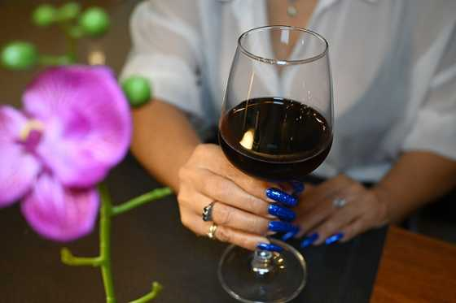
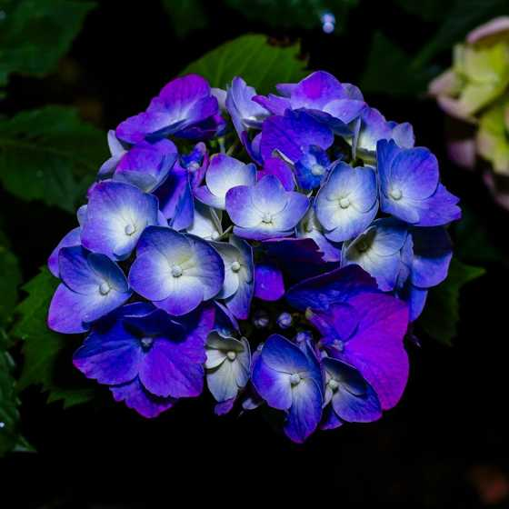
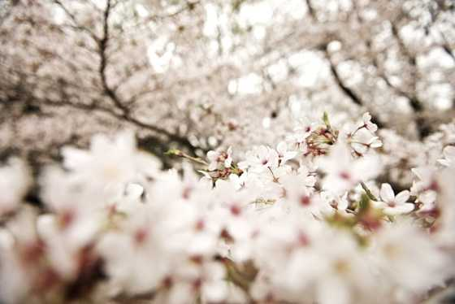
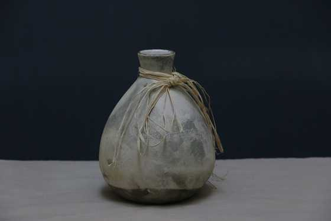
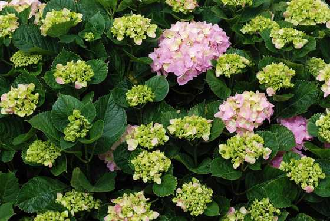
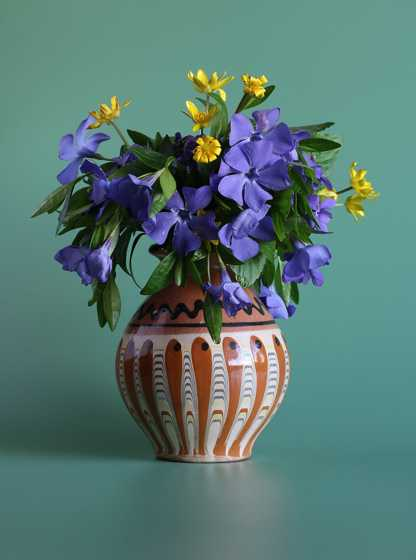
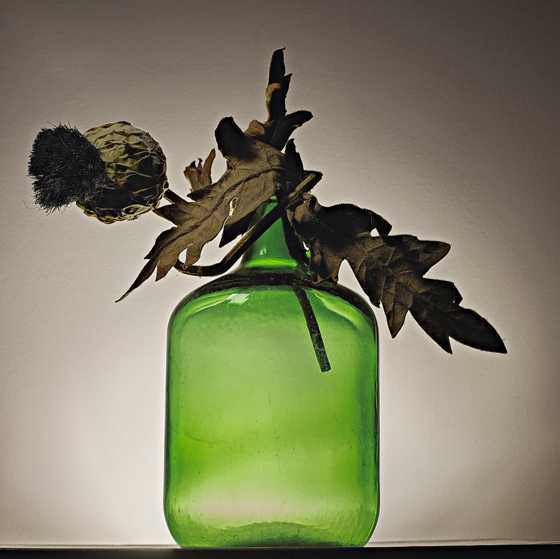
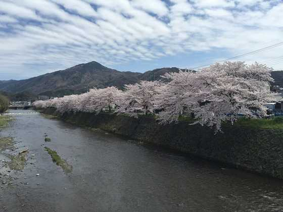

PRIVATE NAIL SALON / 千葉県君津市
ご予約のあなたのために、
ひとつひとつ丁寧に。
完全予約制のプライベートネイルサロン。指先に、あなたらしい花をひとつ咲かせます。
Instagramを見る電話:準備中
お店について
Y's nail は、千葉県君津市にあるプライベートネイルサロンです。オーナーのInstagramでは、完全予約制であること、そしてネイルの資格(JNEC 1級・JNA上級・ネイルサロン衛生管理士)をお持ちであることが紹介されています。
- プライベートネイルサロン(千葉県君津市)
- 完全予約制
- JNEC 1級 / JNA上級 / ネイルサロン衛生管理士(オーナーのInstagramプロフィールより)
- Instagramのハイライトに「リニューアルオープン」「flower」「my nail」などの項目あり
店名の意味やオーナーの想いは公開情報では確認できていないため、記載していません。上記以外のこのページの文章(キャッチコピーなど)は、制作側のイメージです。

メニュー
メニュー・料金の詳細は準備中です。ご予約・ご相談はInstagramからどうぞ。




口コミ
以下は制作側が作成したイメージ例で、実際のお客様の声ではありません。
イメージ例
予約制なので周りを気にせず、ゆったり過ごせました。仕上がりにも満足です。
イメージ例
お花が好きと伝えたら、イメージに合うデザインを一緒に考えてもらえました。
イメージ例
丁寧に話を聞いてくれて、安心して任せられました。また予約したいです。

指先に、花を。
制作側のイメージとして、ひとりひとりのために咲かせる花のようなネイルを思い描きました。お店の実際の施術内容を示すものではありません。


アクセス
- 店名
- Y's nail(プライベートネイルサロン)
- 住所
- 〒299-1107 千葉県君津市上602
- 電話
- 準備中
- 営業時間・定休日
- 準備中
- 予約
- 完全予約制 / Instagramから